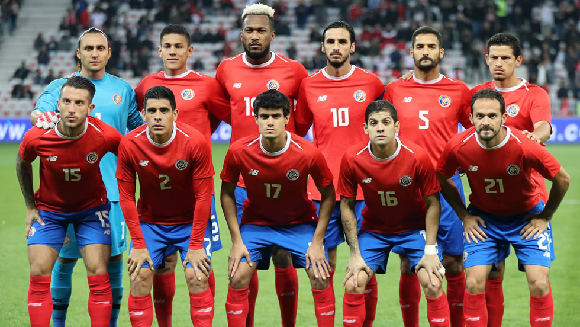
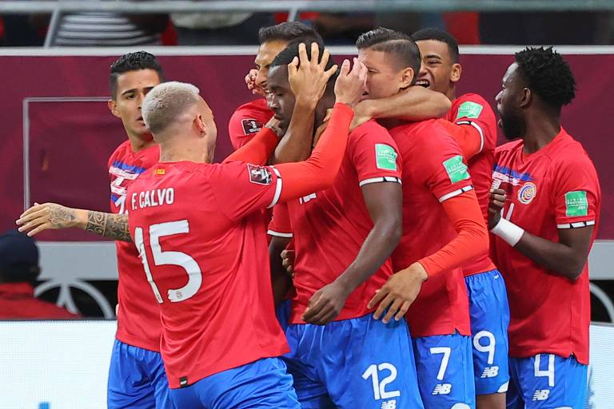
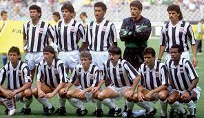

Costa Rica
A terceira equipe mais bem sucedida da CONCACAF. Eles são, claramente, a equipe mais bem sucedida da América Central, tendo se classificado para três Copas do Mundo, atingindo as oitavas de final em sua estreia na Copa na Itália em 1990 e impondo uma exibição sólida em 2002, onde foram colocados no mesmo grupo dos eventuais campeão Brasil e terceiro colocados Turquia. Na Copa do Mundo de 2014, a seleção conseguiu obter sua melhor participação na história dos mundiais.
História
A Costa Rica tem uma cultura no futebol de longa data e tradição. fez sua estreia nos Jogos em setembro de 1921, vencendo seu primeiro jogo por 7-0 contra El Salvador. No final, a Costa Rica derrotou a Guatemala por 6-0 para reclamar o troféu. Ao longo dos anos 50 e 60, e era a segunda mais forte equipe na zona da CONCACAF atrás do México, terminando como vice-campeã nas eliminatórias para as Copas de 1958, 1962 e 1966.
No entanto, no final dos anos 60 a sua sorte cairia e outras equipes da região viriam à tona. Embora a maioria desses participantes tiveram curtas presenças em Copas do Mundo, a Costa Rica não conseguiu chegar à rodada final das eliminatórias da CONCACAF para Copas do Mundo até 1986.
Copa da Itália em 1990
Depois de uma grande campanha no Campeonato CONCACAF, a Costa Rica recebe o seu primeiro passaporte para a fase final de uma Copa do Mundo, onde teve um papel enorme.
Em uma virada surpreendente, a Alemanha Ocidental ganhou por 3-2, com Helmut Rahn marcando o gol da vitória com apenas seis minutos restantes. A vitória inesperada criou uma sensação de euforia ao longo de uma Alemanha dividida no pós-guerra. O triunfo é creditado como tendo um papel significativo em assegurar o fundamento ideológico do pós-guerra da República Federal da Alemanha.